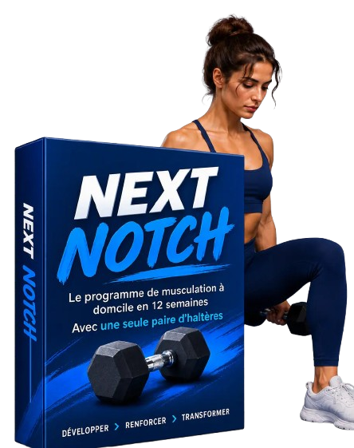
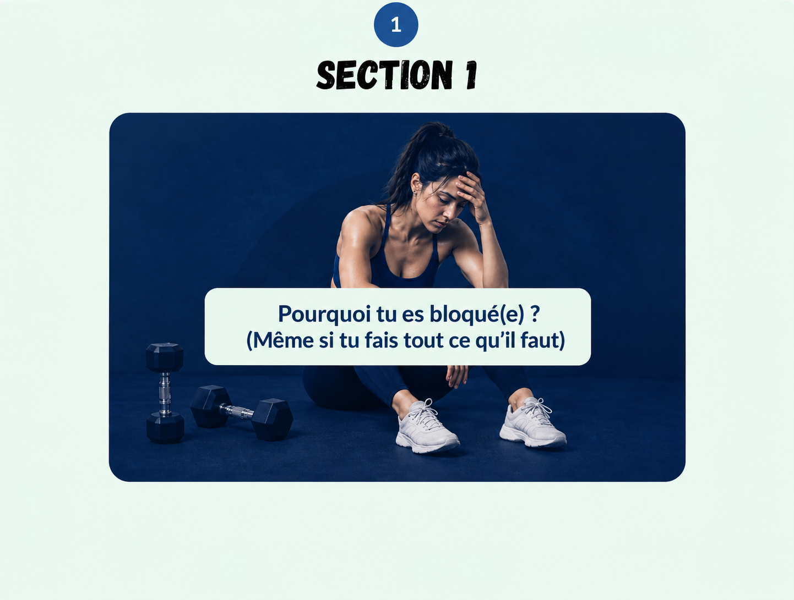
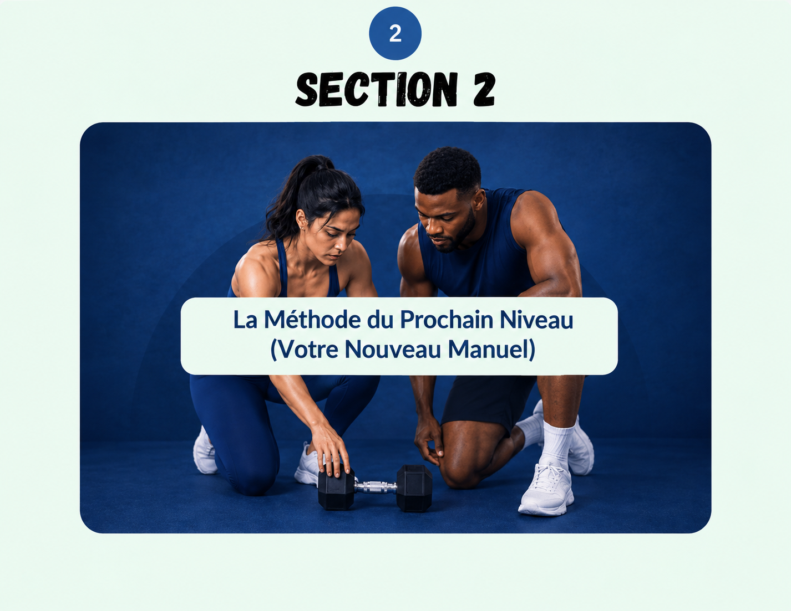
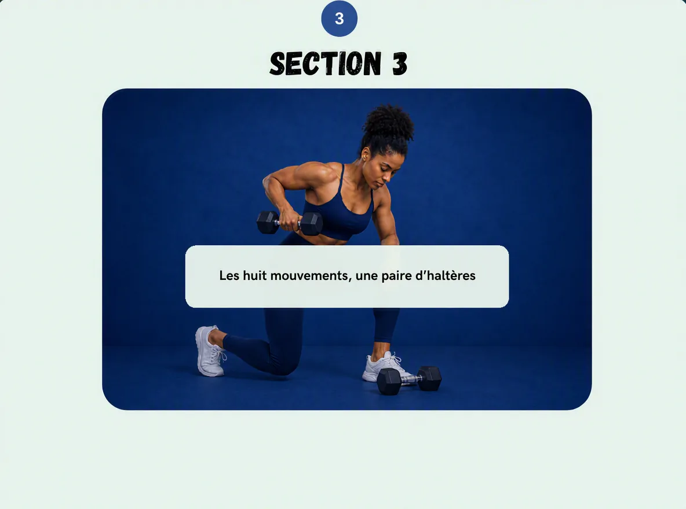
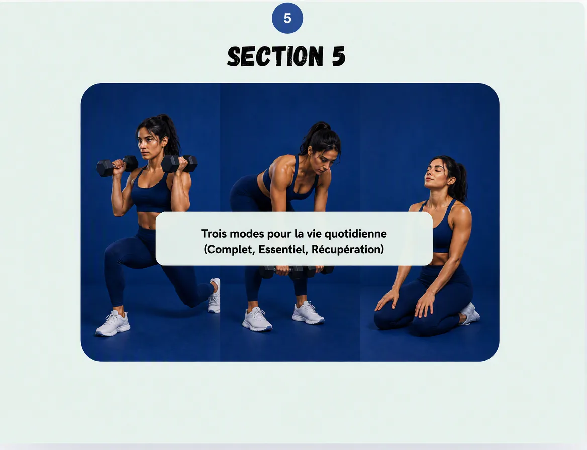

Développe une vraie force à la maison, avec la seule paire d'haltères que tu possèdes déjà.
Pour les femmes débutantes qui en ont assez d'entendre « soulève plus lourd ». Next Notch te donne la décision exacte à prendre quand ton poids actuel devient trop facile et que le suivant te semble impossible.
Guide numérique + audio de motivation + vidéo explicative de la méthode

« Augmente progressivement la charge » sonne bien… jusqu'au jour où 7 kg te paraissent faciles, 9 kg te semblent risqués, et personne ne t'explique quoi faire entre les deux.

Tu n'es pas paresseuse. C'est simplement que tes instructions se sont arrêtées.
La première semaine est difficile. À la quatrième, le même poids bouge mieux. À la sixième, tu fais toujours les mêmes répétitions, parce que le réglage suivant ressemble à une erreur qui attend de se produire.
Tu refais les mêmes séries confortables en te demandant si elles comptent encore.
Tu sautes une séance parce que refaire exactement la même chose te paraît inutile.
Tu commences à chercher du nouveau matériel, alors que la paire que tu as n'est pas le vrai problème.
Il te manque une règle de décision. Et une fois que tu l'as, « trop facile » devient un signal, plus une impasse.
Plus de contenu ne t'a pas donné une étape suivante plus claire.
Elles te donnent les exercices du jour, pas la règle pour progresser la semaine prochaine.
Bien en théorie. Inutile quand l'écart entre deux réglages est tout simplement trop grand.
Une deuxième paire repousse la même confusion un peu plus loin. Elle ne la résout pas.
Un chemin. Huit mouvements. Une décision fiable, chaque semaine.
Next Notch n'est pas une immense bibliothèque d'entraînements. C'est un guide de règles pour 12 semaines de musculation à domicile, pensé pour la paire d'haltères réglables qui traîne déjà chez toi.
Tu apprends à lire chaque série, à choisir ta prochaine progression, à t'adapter à ton énergie du moment, et à continuer d'avancer sans forcer ton corps ni repartir de zéro.
Voir ce qu'il y a dedans

Le poids est ton dernier levier, pas le premier.
Quand une série devient trop facile, tu passes par six moyens éprouvés de rendre l'effort plus exigeant. Ce n'est qu'après les avoir utilisés que le poids augmente.
La logique est simple: un même haltère peut devenir nettement plus difficile avant même de devenir plus lourd.
Un système complet pour t'entraîner sans te poser mille questions.
La feuille de route en 12 semaines
Traverse les phases d'étalonnage, de progression et d'autonomie, avec un objectif clair à chaque étape.
La règle des six leviers
Sache exactement comment rendre un mouvement plus difficile avant de chercher un réglage plus lourd.
Huit schémas essentiels
Travaille tout le corps avec un exercice ciblé par schéma de mouvement, sans choix à n'en plus finir.
Trois modes pour la vraie vie
Choisis entre le mode Complet, Essentiel ou Récupération, pour qu'une semaine difficile ne se transforme pas en mois envolé.
Des variantes douces pour les articulations
Remplace un mouvement sans perdre ta place dans la progression et sans t'obliger à forcer malgré une douleur vive.
Des outils de décision imprimables
Utilise le journal hebdomadaire et les vérifications rapides pour que ta prochaine séance devienne presque automatique.
Bonus : la vidéo explicative de la méthode
Regarde le processus de décision en action et vois comment un « trop facile » devient une prochaine étape claire.
Bonus : l'audio de motivation
Appuie sur lecture les jours où tu as besoin d'un rappel calme et humain : une séance plus courte compte quand même.

Ton plan a plus d'un réglage.
Un jour de grande énergie, tu fais la séance complète de 30 à 35 minutes. Un jour chargé, la séance Essentielle de 18 à 20 minutes. Un jour de fatigue, 10 à 15 minutes de Récupération. La méthode reste intacte, seule la quantité change.
La régularité s'accumule. La perfection, non.
Vois comment une série « trop facile » devient ta prochaine étape.
Regarde un court extrait visuel du guide, puis utilise la vidéo explicative complète incluse dans ton achat pour appliquer la méthode pas à pas.
Next Notch est-il fait pour toi ?
C'est pour toi si…
- Tu es une femme débutante ou presque, et tu veux te sentir plus forte chez toi.
- Tu possèdes une paire d'haltères réglables et tu butes sans cesse sur l'écart du « cran suivant ».
- Tu veux un parcours hebdomadaire simple plutôt que 200 séances à trier.
- Ton temps et ton énergie varient, mais tu veux un plan qui tient compte de ta vraie vie.
- Tu veux des progrès mesurables, que tu peux sentir et noter, pas une promesse spectaculaire.
Ce n'est pas pour toi si…
- Tu as déjà une salle de sport complète à la maison et plusieurs paires d'haltères.
- Tu veux une bibliothèque d'exercices sans fin ou une nouvelle séance chaque jour.
- Tu cherches un défi extrême, du genre « à fond ou rien ».
- Tu as besoin d'un diagnostic de blessure ou de rééducation plutôt que de conseils de forme générale.
- Tu refuses de noter quelques détails simples après chaque exercice.
Ce que certaines d'entre elles ont dit lors de notre premier lancement
De vraies femmes qui viennent de démarrer leur parcours de 12 semaines avec Next Notch.
Je n'ai jamais su quand passer à un poids plus lourd, jusqu'à ça. Semaine 3, et j'ai enfin l'impression de progresser au lieu de deviner.
Le mode Essentiel m'a sauvée. Certaines semaines, je n'ai que 20 minutes, mais j'ai quand même le sentiment de tenir mon plan.
Pour la première fois, m'entraîner à la maison me paraît vraiment sérieux. Ma seule paire d'haltères a enfin retrouvé une vraie utilité.
Le journal de décision est étrangement satisfaisant. Je vois vraiment ma force augmenter de semaine en semaine.
Je refaisais la même séance pendant des mois sans rien changer. Maintenant, je sais exactement quoi ajuster et quand.
Seulement deux semaines et je me tiens déjà différemment. C'est un petit détail, mais il compte vraiment pour moi.
Je n'ai jamais su quand passer à un poids plus lourd, jusqu'à ça. Semaine 3, et j'ai enfin l'impression de progresser au lieu de deviner.
Le mode Essentiel m'a sauvée. Certaines semaines, je n'ai que 20 minutes, mais j'ai quand même le sentiment de tenir mon plan.
Pour la première fois, m'entraîner à la maison me paraît vraiment sérieux. Ma seule paire d'haltères a enfin retrouvé une vraie utilité.
Le journal de décision est étrangement satisfaisant. Je vois vraiment ma force augmenter de semaine en semaine.
Je refaisais la même séance pendant des mois sans rien changer. Maintenant, je sais exactement quoi ajuster et quand.
Seulement deux semaines et je me tiens déjà différemment. C'est un petit détail, mais il compte vraiment pour moi.
D'autres témoignages arrivent — le tien pourrait être le prochain.
Arrête d'accumuler des séances. Construis une force que tu sais expliquer.
Tu as déjà le matériel. Voici le guide qui te dit quoi en faire : cette semaine, la semaine prochaine, et la semaine où la vie ne coopère pas.
- Le guide numérique Next Notch
- La feuille de route d'entraînement sur 12 semaines
- Le journal de décision hebdomadaire + modèles de vérification rapide
- La vidéo explicative de la méthode
- L'audio de motivation pour les jours difficiles
Le système complet Next Notch
Paiement sécurisé · Livraison numérique immédiate
JOURS
SATISFAIT OU REMBOURSÉ
Ta garantie « Zéro excuse » de 14 jours
Essaie Next Notch pendant 14 jours complets. Suis la méthode, applique le système, utilise les modèles. Si tu ne sens pas un vrai changement dans ta façon de te présenter — dans le miroir, dans ta confiance, dans ta façon de te tenir — envoie simplement un e-mail et nous te remboursons jusqu'au dernier centime. Sans formulaire, sans complications, sans rancune. Nous l'avons créé parce que ça marche. Nous sommes aussi investis dans tes résultats que toi.
Tout ce qu'il te faut pour te décider.
Dans douze semaines, tu pourrais te demander encore ce qui vient après… ou tu pourrais le savoir.
Tu n'as pas besoin de plus de motivation que celle que tu as aujourd'hui. Il te faut un chemin qui fonctionne encore quand ton poids, ton énergie ou ta semaine changent.
Commencer mon parcours de 12 semainesUne paire. Six leviers. Une prochaine étape claire.